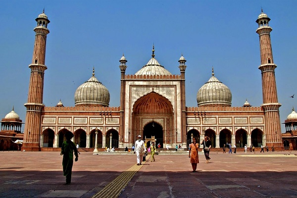

| Description | Total | Percentage |
|---|---|---|
| Hindu | 1,244,425 | 69.20 % |
| Muslims | 472,578 | 26.28 % |
| Christian | 20,205 | 1.12 % |
| Sikh | 10,247 | 0.57 % |
| Buddhist | 19,481 | 1.08 % |
| Jain | 24,267 | 1.35 % |
| Others | 296 | 0.02 % |
| Not Stated | 6,719 | 0.37 % |
Bhojeshwar Hindu temple, on the banks of the River Betwa, is in Bhojpur village, 28km from Bhopal. This temple is one of the most famous temples in Bhopal. Paramara King Bhoja started constructing it around the 10th-11th century but left it unfinished.
Sant Narayan Dasji Mahara established Cave Temple in Bhopal. Initially, this temple was within a rocky cave meant for worshipping Lord Shiva. Also, there is a Lord Hanuman’s temple, which is popular amongst devotees.
This Krishna Mandir in Bhopal remains open throughout the day for devotees to offer prayers and worship. People from across the state visit this temple as it entails serene vibes that tend to instill a peace of mind.
Moti Masjid is one of the many mosques located in Bhopal, Madhya Pradesh. Even though the mosque is relatively smaller in size as compared to the other exquisite and historical monuments that stand majestically in the 'city of mosques', the Moti Masjid is of equal importance.
The construction work of this mosque started in the reign of the Mughal Emperor Bahadur Shah Zafar by Nawab Shah Jahan Begum (1844–1860 and 1868–1901) of Bhopal (Wife of Nawab Syed Siddiq Hasan Khan) and continued to be built by her daughter Sultan Jahan Begum, till her lifetime.
Constructed during the period of Quidisiya Begum, Jama Masjid is a revered shrine and popular tourist destination in the city of Bhopal. It is officially known as Taj-ul-Masajid, which translates to "Crown Among Mosques". The magnificent architecture of Jama Masjid boasts of classic Islamic architecture with its beautiful shrine and two tall minarets.
The infant Jesus Church is an iconic building in the town of Bhopal. The church is renowned for its beautiful altar and paintings depicting Jesus. The Infant Jesus Church is believed to be one of the oldest Churches in Bhopal.If you are in Bhopal during the Christmas celebrations, the beauty and the decoration of this church will amaze you.
The St. Joseph’s Catholic Church has a divine ambiance, and you will love the beauty of the Church. Although the Church is located slightly in the interior of the town, the surroundings are silent and serene.This is the best place to visit if you are worried or stressed.
This small, yet beautiful Church is located near the Habibganj railway station in Bhopal. Due to its close proximity to the railway station, thousands of people visit this Church for prayers on Sundays. The St. Thomas’s Malankara Church is a Catholic Church, and you will love the areas surrounding the church.
Mahaveer Giri, formerly known as the Manua Bhan Ki tekri, is a hilltop templ with an excellent history. The first time I laid my eyes on this was during my stay at Noor-Us-Sahab Palace. On the 1st-morning, when I drew open the curtains, I was greeted by the sight of mountainnscaps wrapped in mild fog.
The St. Joseph’s Catholic Church has a divine ambiance, and you will love the beauty of the Church. Although the Church is located slightly in the interior of the town, the surroundings are silent and serene.This is the best place to visit if you are worried or stressed.
This small, yet beautiful Church is located near the Habibganj railway station in Bhopal. Due to its close proximity to the railway station, thousands of people visit this Church for prayers on Sundays. The St. Thomas’s Malankara Church is a Catholic Church, and you will love the areas surrounding the church.